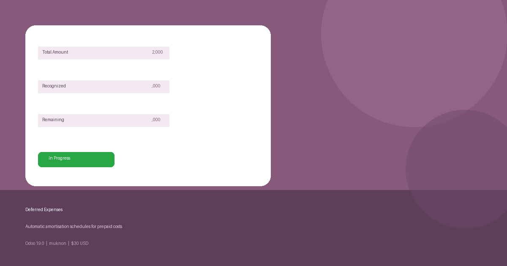

Production / Stable LGPL-3 Odoo 19.0 Accounting
Manage prepaid and deferred expenses with automatic amortisation schedules. When your company pays an expense upfront — annual insurance, prepaid rent, software licences — this module spreads the cost over the benefit period automatically, with no manual journal work required.
Define your journal, prepaid account, and expense account once as a template and apply it to any number of records in a single click.
Confirm a record and recognition lines are generated instantly, with correct day-count proration for partial first and last months.
A scheduled action runs every day and posts all recognition entries whose date has arrived — zero manual intervention needed.
Full analytic account support on every generated journal entry for accurate cost-centre reporting.
Link a deferred expense directly to the originating vendor bill line for complete audit traceability.
Recognised Amount and Remaining Amount are computed live from posted journal entries and always stay in sync.
Every state change and automated posting is logged in the chatter with user and timestamp for full transparency.
Ships with a complete Arabic (ar_001) translation so your team can work in their preferred language.
| Module | Purpose | Included with Odoo? |
|---|---|---|
account | Core Accounting (journal entries, accounts) | Yes — standard |
analytic | Analytic distribution on journal lines | Yes — standard |
mail | Chatter, activity tracking | Yes — standard |
This module is released under the GNU Lesser General Public License v3 (LGPL-3).
muknon